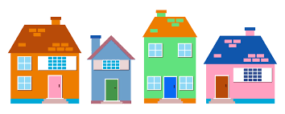

While pursuing a career in education, I would
tutor my cousin in her business, accounting and other courses. I rediscovered
my passion for problem solving and after doing research decided to
pursue a career in data analytics. I started taking the Google Data Analytics
Certificate from courseera and immediately realized I wanted dedicated extra time to
expanding my coding and analytic skills. For my first project, I
completed the Google Data Analyst BikeShare project using R.


This is a Powerpoint Presentation of the Cyclistic Case Study. It showcases my ability to
analyze and help solve a business problem presented to me. I use the six steps in the data analytics process to
determine how annual riders and casual riders have used Cyclistic Bike share differently over the course of the last year.
With the information that was presented to me, I decided which programming tools will be best for answering cleaning the data,
performing calculation to analyze the data, visulaize finding, and answer the problem presented to me.

SQL was used to cleanup and manipulate Tenessee housing data. The focus of this project is data wrangling
because in order to provide insightful analysis datasets need to be readable. I cleaned up the
data to make it easier to analyze.
This porject is a Dashboard of COVID 2019 statistics. The dashboard shows data of COVID 19
deaths and COVID cases around the world.
Using Cyclistic Data from the Google Data analyst certificate case study performed calculations
and performed analysis of January's Data using a pivot table.

In this project SQL is used to explore COVID 19 Data. Joins, CTE, temp tables, Maximum, Minimum, and
other aggregate functions are used to perform calculations on the dataset and .